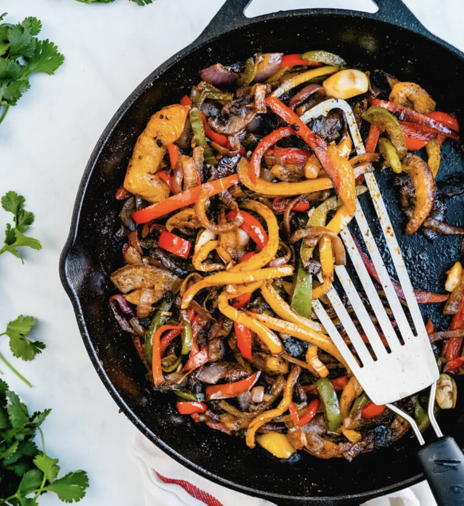
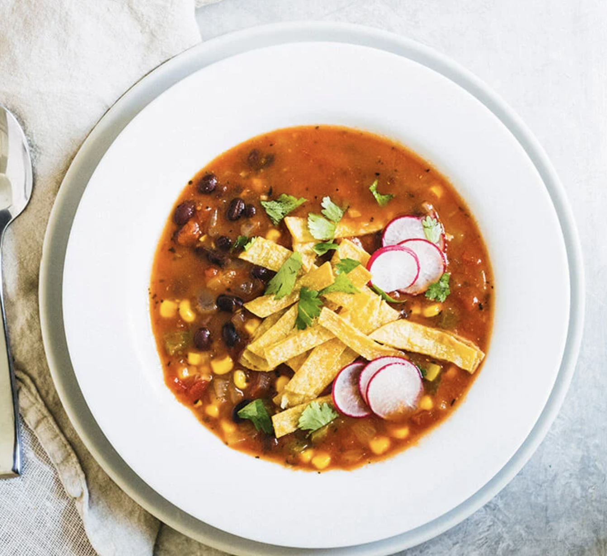
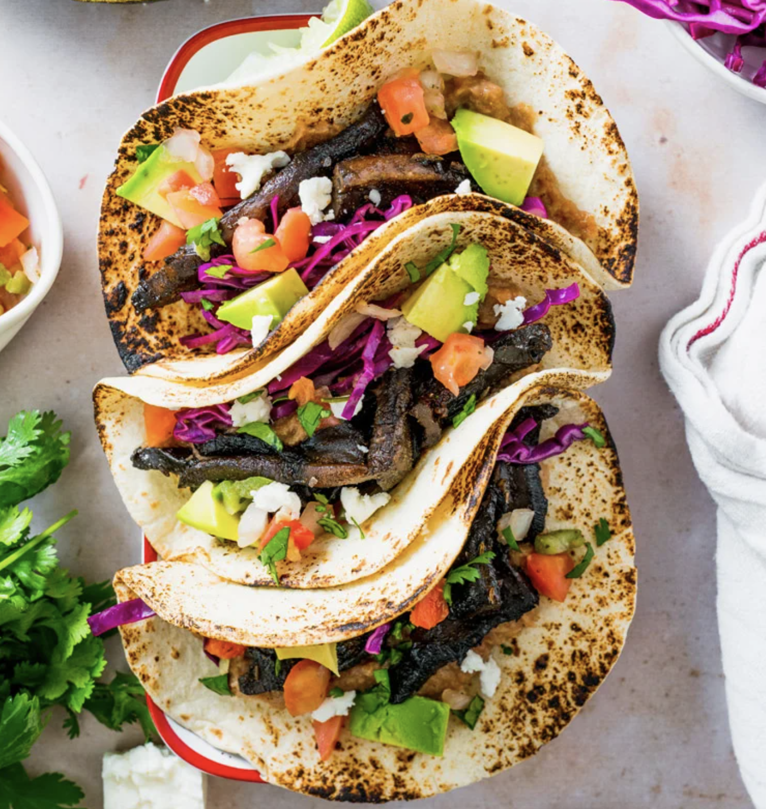
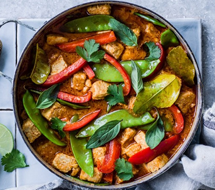
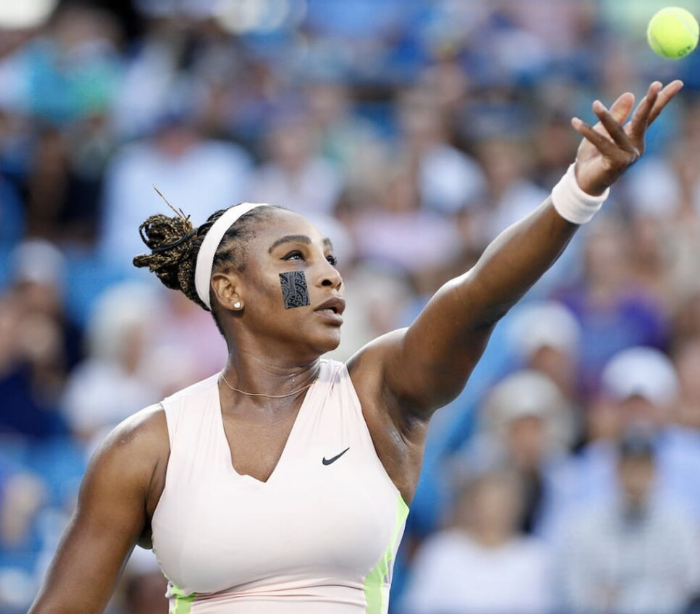
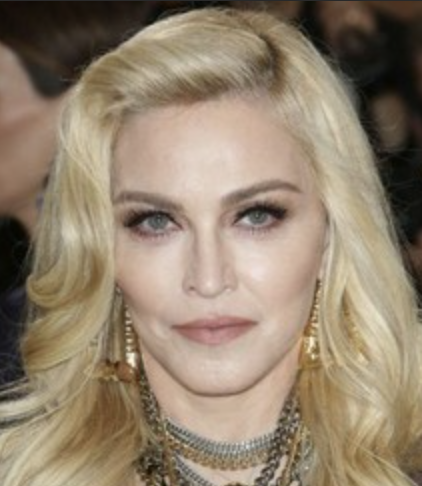
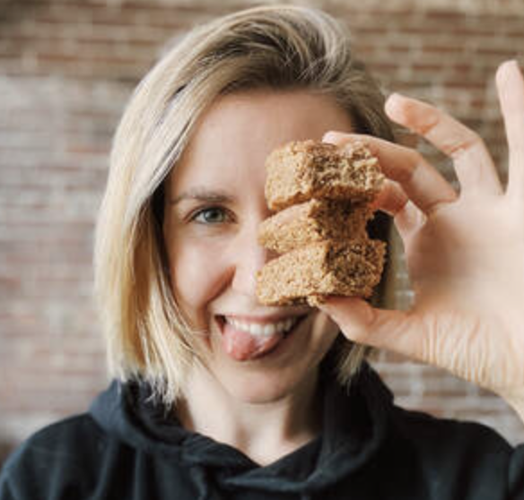

Fajitas

Tortilla Soup
TacosVegetarianism

Vegetarianism is a mindful dietary choice that emphasizes a plant-centric lifestyle while excluding meat and, in some cases, other animal products. Rooted in a commitment to compassionate living, vegetarians navigate a culinary landscape rich in fruits, vegetables, grains, and legumes, eschewing the consumption of meat for ethical, environmental, and health reasons. By forgoing meat, vegetarians contribute to the reduction of environmental impact associated with animal agriculture and align with principles that prioritize the welfare of animals. This dietary philosophy not only fosters personal well-being but also serves as a positive step towards a more sustainable and compassionate global food system.



Serena William's is a tennis player follows a vegetarian and vegan diet.

Fajitas
Tortilla Soup
Tacos